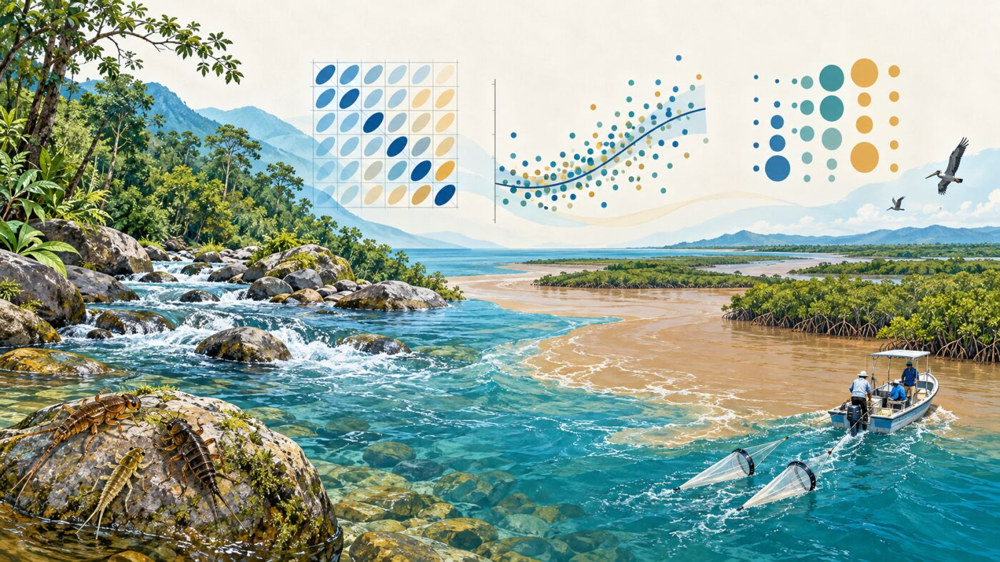
Taller 6. Exploración Gráfica Multivariada
Materiales requeridos para el taller en clase
En el siguiente enlace se puede descargar el archivo comprimido del taller, con las bases de datos de macroinvertebrados acuáticos y de mesozooplancton estuarino (📰 Taller 6. Exploración gráfica multivariada).
Nota: una vez se descarguen los materiales, se requiere descomprimirlos antes de realizar cualquier procedimiento y seguir las orientaciones del docente para realizar los ejercicios requeridos.
Diapositivas en vivo - Slides.com

Objetivos del taller
Este taller acompaña la sesión del sábado en la mañana de la Semana 3 (S8) y aplica el mapa de exploración presentado en la sesión anterior (presentación 06, “Introducción al Análisis Multivariado”; RA2, con lectura ecológica RA3). Al terminar, se podrá:
- Elegir la figura exploratoria según la pregunta: relaciones (cuantitativa frente a cuantitativa) o diferencias (cuantitativa frente a factor).
- Detectar bloques de variables correlacionadas y describir la forma de las relaciones (lineal o suavizada).
- Comparar grupos con densidades, cajas, facetas y barras con estadísticos, y reconocer indicios de interacción entre factores.
- Preparar una base en formato largo para la exploración multivariada y resumir un ensamblaje a lo largo de un gradiente con figuras de burbujas.
Se trabajan dos casos guiados, en el mismo orden de los talleres de exploratorios del grupo: primero macroinvertebrados acuáticos (base pequeña, en formato ancho) y luego mesozooplancton estuarino (base real, en formato largo). Las figuras coinciden con las de las diapositivas 10 a 14 de la presentación 06.
TipNúcleo y material complementario
Este taller cubre lo esencial para la sesión. El caso de microalgas perifíticas del río Gaira, las burbujas con datos hipotéticos, las variantes con lattice, las figuras de violín, las burbujas interactivas y el guardado automático de figuras y tablas están en el Material complementario.
NotaBases de datos
- Insectos (hoja
InsectosdeInsectos.xlsx): datos hipotéticos con fines didácticos, de 4 cuencas con 5 quebradas cada una. - Insectos2 (hoja
Insectos2): datos reales de grupos funcionales alimentarios de macroinvertebrados del río Gaira, Sierra Nevada de Santa Marta (Rodríguez-Barrios et al., 2011). Se usan en el estudio de caso. - Plancton (hoja
Riquezadeplancton.xlsx): mesozooplancton del estuario del golfo de Urabá, Caribe colombiano (Vargas-Ospina et al., 2025).
Código
# Librerías requeridas
library(tidyverse)
library(readxl)
library(kableExtra)
library(corrplot)
# Paletas del taller
col_cuenca <- c(cuen1 = "#fc8d59", cuen2 = "#fee08b",
cuen3 = "#99d594", cuen4 = "#377eb8")
col_capa <- c(Profunda = "#2C6FB7",
Superficial = "#E3A33B")
col_malla <- c("250 μm" = "#2C6FB7",
"500 μm" = "#E3A33B")
# Panel de la diagonal para pairs(): histograma
panel_hist <- function(x, ...) {
usr <- par("usr"); on.exit(par(usr = usr))
par(usr = c(usr[1:2], 0, 1.5))
h <- hist(x, plot = FALSE)
rect(h$breaks[-length(h$breaks)], 0,
h$breaks[-1], h$counts / max(h$counts),
col = "#9DBFE3", border = "white")
}
# Panel superior para pairs(): r de Pearson, con tamaño proporcional a |r|
panel_r <- function(x, y, ...) {
usr <- par("usr"); on.exit(par(usr = usr))
par(usr = c(0, 1, 0, 1))
r <- cor(x, y)
text(0.5, 0.5, sprintf("%.2f", r),
cex = 0.9 + 1.5 * abs(r))
}Antes de empezar: tres estrategias de exploración
Un gráfico exploratorio no demuestra causalidad, pero orienta preguntas: ¿hay un gradiente que estructure el ensamblaje?, ¿hay grupos de sitios que se separen?, ¿hay valores atípicos que deban verificarse? Antes de graficar se responde: ¿qué es una fila (unidad muestral)?, ¿qué matrices hay (especies Y, ambiental X, factores F)? y ¿la pregunta es de relaciones o de diferencias?
| Estrategia | Pregunta | Variables | Figuras | Conduce a |
|---|---|---|---|---|
| Relaciones | ¿Cómo covarían las variables? ¿Hay gradientes? | Cuantitativa frente a cuantitativa | Elipses, pares, dispersión lineal y loess, coplot | PCA (T7), NMDS y CA (T8), RDA y CCA (T9) |
| Diferencias | ¿Difieren sitios, épocas o hábitats? | Cuantitativa frente a factor | Densidades, cajas, facetas, barras ± e.e. | CLA, LDA, MANOVA y PERMANOVA (T10) |
| Síntesis | ¿Cómo se ordena el ensamblaje a lo largo de un gradiente? | Gradiente (X), taxón (Y) y abundancia (tamaño) | Burbujas | CA y CCA (T8 y T9) |
Parte 1 — Relaciones: macroinvertebrados acuáticos
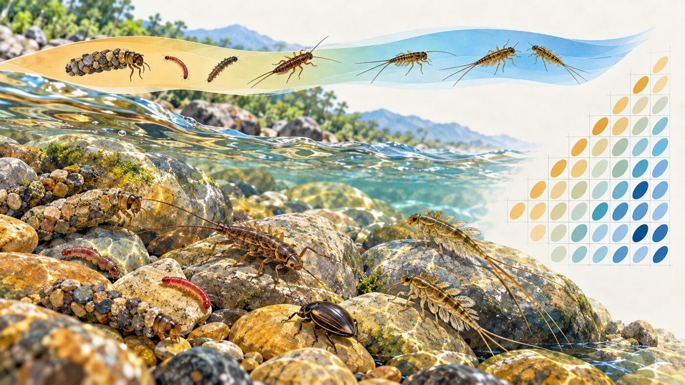
Pregunta: ¿Qué variables ambientales y biológicas cambian juntas en las quebradas?
La base tiene 20 quebradas (filas) de 4 cuencas, con 2 variables ambientales (pH y temperatura), la abundancia de 5 órdenes de insectos acuáticos (Ephemeroptera, Plecoptera, Trichoptera, Diptera y Coleoptera) y la abundancia total (Ab).
Código
# Cargar la hoja «Insectos» y definir la cuenca como factor
ins <- read_excel("Insectos.xlsx", sheet = "Insectos") %>%
mutate(cuenca = factor(cuenca))
# Nombres de las columnas de taxones
taxa_ins <- c("Efem", "Plec", "Tric", "Dipt", "Cole")
# Tabla con las primeras quebradas
head(ins) %>%
kbl(booktabs = TRUE) %>%
kable_classic(full_width = F) %>%
row_spec(0, bold = TRUE)| quebrada | cuenca | pH | temp | Efem | Plec | Tric | Dipt | Cole | Ab |
|---|---|---|---|---|---|---|---|---|---|
| 1 | cuen1 | 6.8 | 17.4 | 26 | 4 | 9 | 30 | 3 | 72 |
| 4 | cuen1 | 7.3 | 16.8 | 17 | 6 | 9 | 25 | 1 | 58 |
| 11 | cuen1 | 5.6 | 16.0 | 9 | 3 | 28 | 24 | 3 | 67 |
| 13 | cuen1 | 6.3 | 17.8 | 2 | 3 | 25 | 21 | 6 | 57 |
| 19 | cuen1 | 5.6 | 18.2 | 6 | 4 | 24 | 12 | 13 | 59 |
| 3 | cuen2 | 6.3 | 17.0 | 7 | 2 | 25 | 10 | 1 | 45 |
Figuras de elipses
Las figuras de correlación del paquete corrplot muestran el signo (azul positivo, rojo negativo) y la intensidad (elipses más estrechas) de cada par de variables.
Código
# Matriz de correlación con todas las variables cuantitativas
M_ins <- cor(ins[, c("pH", "temp", taxa_ins, "Ab")])
# Elipses arriba y coeficientes abajo
corrplot.mixed(M_ins, upper = "ellipse", lower = "number",
tl.col = "black", number.cex = 0.8)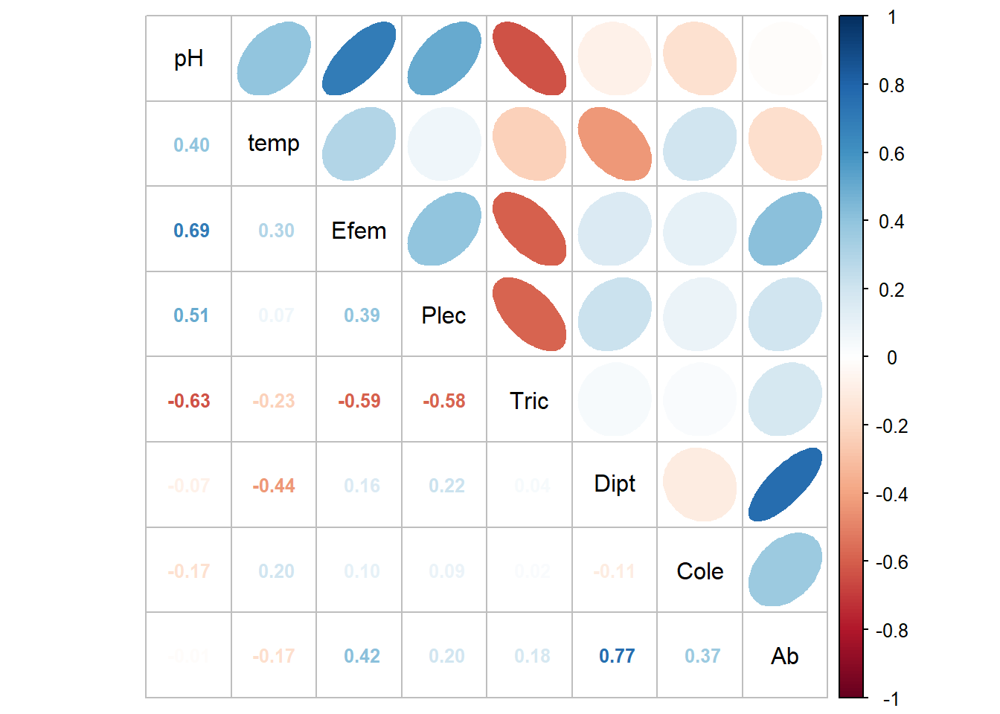
Código
# Pares de variables con |r| >= 0.5, ordenados por intensidad
pares_ins <- as.data.frame(as.table(M_ins)) %>%
filter(as.integer(Var1) < as.integer(Var2), abs(Freq) >= 0.5) %>%
arrange(desc(abs(Freq))) %>%
transmute(`Variable 1` = Var1,
`Variable 2` = Var2,
r = round(Freq, 2))
# Tabla de pares
pares_ins %>%
kbl(booktabs = TRUE) %>%
kable_classic(full_width = F) %>%
row_spec(0, bold = TRUE)| Variable 1 | Variable 2 | r |
|---|---|---|
| Dipt | Ab | 0.77 |
| pH | Efem | 0.69 |
| pH | Tric | -0.63 |
| Efem | Tric | -0.59 |
| Plec | Tric | -0.58 |
| pH | Plec | 0.51 |
Cuando interesa la relación de muchos taxones con pocas variables ambientales, se usa una matriz rectangular:
Código
# Ambientales (filas) frente a biológicas (columnas)
M1_ins <- cor(ins[, c("pH", "temp")], ins[, c(taxa_ins, "Ab")])
corrplot(M1_ins, method = "ellipse", tl.col = "black")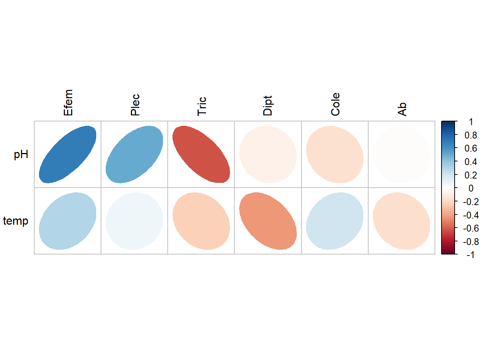
El pH se asocia positivamente con Ephemeroptera (r = 0.69) y negativamente con Trichoptera (r = -0.63), y la abundancia total sigue sobre todo a Diptera (r = 0.77), el orden más abundante.
Pares: forma de la relación
La figura de pares añade histogramas (diagonal), el r de Pearson (arriba) y un suavizado loess (abajo), que permite ver si una relación es lineal.
Código
# Figura de pares con cinco variables
pairs(ins[, c("pH", "Efem", "Tric", "Dipt", "Ab")],
diag.panel = panel_hist, upper.panel = panel_r,
lower.panel = panel.smooth)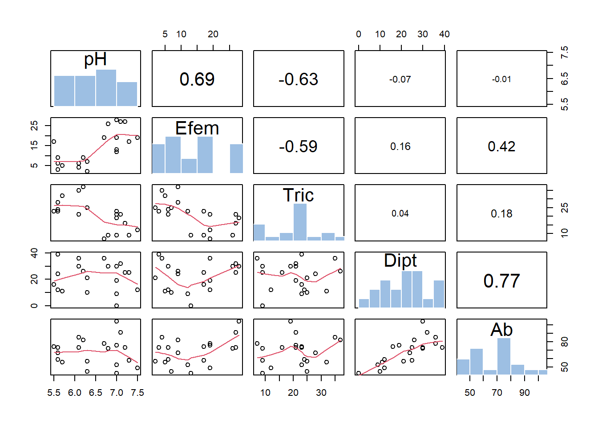
TipVersión en ggplot2
El correlograma también se construye con ggplot2, lo que facilita ajustar colores y textos:
Código
# De matriz a formato largo y mapa de calor con el valor de r
as.data.frame(as.table(M_ins)) %>%
ggplot(aes(x = Var1, y = Var2, fill = Freq)) +
geom_tile(color = "white") +
geom_text(aes(label = round(Freq, 2)), size = 3) +
scale_fill_gradient2(low = "#B2182B",
mid = "white",
high = "#2166AC",
limits = c(-1, 1), name = "r") +
labs(x = NULL, y = NULL) +
theme_minimal()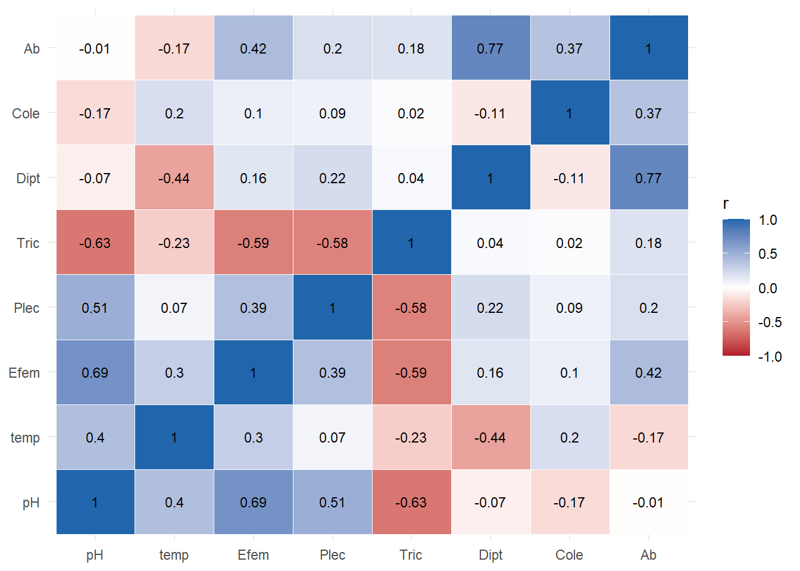
Dispersión X–Y: lineal frente a loess
Código
# Dispersión con ajuste lineal y suavizado loess, coloreada por cuenca
ggplot(ins, aes(x = pH, y = Efem)) +
geom_point(aes(color = cuenca), size = 3) +
geom_smooth(method = "lm",
formula = y ~ x,
se = FALSE,
color = "black",
linewidth = 0.8) +
geom_smooth(method = "loess",
formula = y ~ x,
se = FALSE,
color = "#C0392B",
linetype = "dashed") +
scale_color_manual(values = col_cuenca) +
labs(x = "pH", y = "Abundancia de Ephemeroptera", color = "Cuenca") +
theme_bw()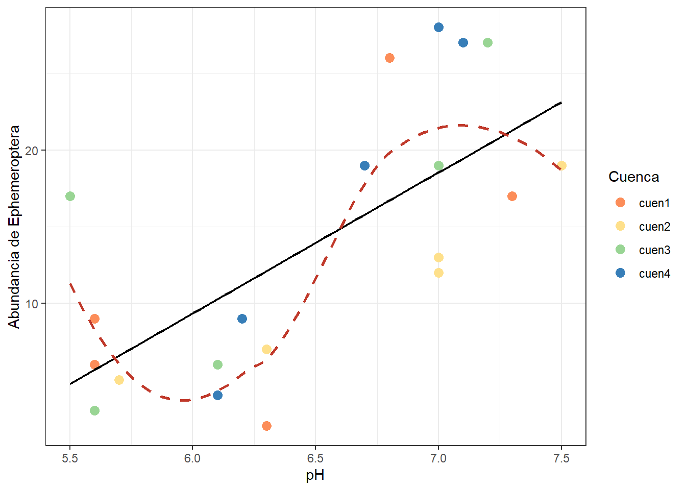
La tendencia general es positiva, pero el loess dibuja una curva en S: Ephemeroptera aumenta sobre todo entre pH 6.3 y 7 y se estabiliza después. Con 20 quebradas, el loess es sensible a pocos puntos, así que la forma curva es una pista, no una conclusión. Las cuencas se mezclan a lo largo del gradiente de pH.
Coplot: una relación condicionada por una tercera variable
El coplot repite la relación pH–Ephemeroptera en paneles, uno por cada clase de temperatura. Para que los paneles no se solapen, la temperatura se categoriza en terciles, como se explica en la Parte 4 del Taller 5.
Código
# Temperatura en terciles: tres clases con un número similar de quebradas
ins <- ins %>%
mutate(clasetemp = cut(temp, quantile(temp, c(0, 1/3, 2/3, 1)),
labels = c("T.Baja", "T.Media", "T.Alta"),
include.lowest = TRUE))
# Quebradas por clase y r pH–Efem dentro de cada clase
r_clase <- ins %>%
group_by(clasetemp) %>%
summarise(n = n(), r = round(cor(pH, Efem), 2))
r_clase# A tibble: 3 × 3
clasetemp n r
<fct> <int> <dbl>
1 T.Baja 7 0.9
2 T.Media 6 0.37
3 T.Alta 7 0.75Código
# Panel con ajuste lineal
panel_lm <- function(x, y, ...) {
points(x, y, ...)
abline(lm(y ~ x), col = "#C0392B", lwd = 1.5)
}
# Coplot condicionado por la clase de temperatura
coplot(Efem ~ pH | clasetemp, data = ins, rows = 1,
panel = panel_lm, pch = 19,
xlab = c("pH", "Clase de temperatura"),
ylab = "Abundancia de Ephemeroptera")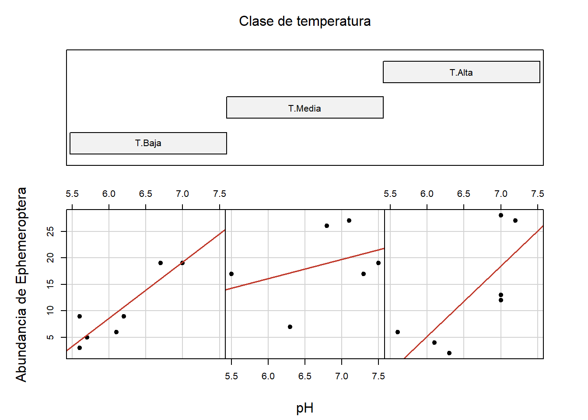
La relación se mantiene positiva en las tres clases (r = 0.9, 0.37, 0.75), aunque es más débil en la temperatura media. Con 6 o 7 quebradas por panel, la diferencia entre clases es solo un indicio.
Para discutir: pH, Ephemeroptera y Trichoptera forman un bloque (Ephemeroptera sube y Trichoptera baja con el pH). En un PCA (Taller 7), ¿se esperaría que estas tres variables quedaran sobre el mismo eje o en ejes distintos?
Parte 2 — Diferencias: macroinvertebrados entre cuencas
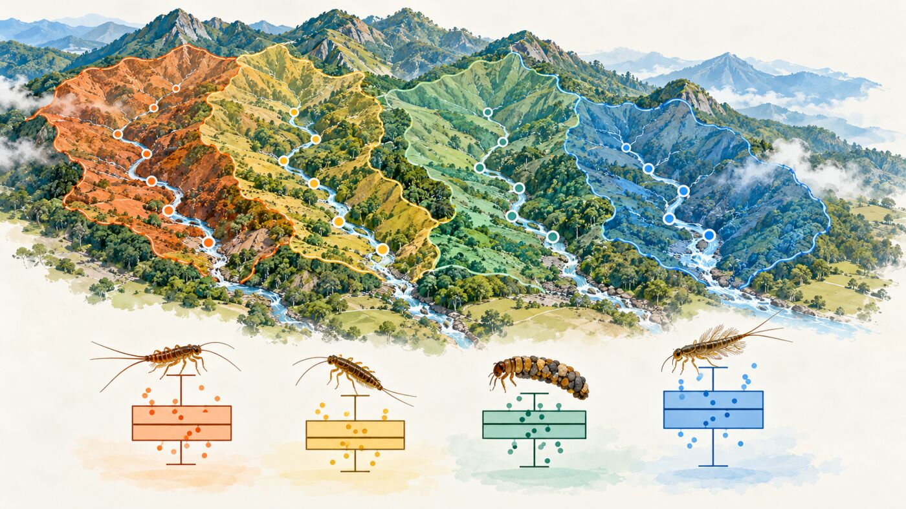
Pregunta: ¿Difiere la abundancia de insectos entre las cuatro cuencas?
Densidades: forma de la distribución
Código
# Una curva de densidad por cuenca, en paneles
ggplot(ins, aes(x = Ab, fill = cuenca)) +
geom_density(alpha = 0.6) +
scale_fill_manual(values = col_cuenca,
guide = "none") +
facet_wrap(~ cuenca, nrow = 1) +
labs(x = "Abundancia total", y = "Densidad") +
theme_bw()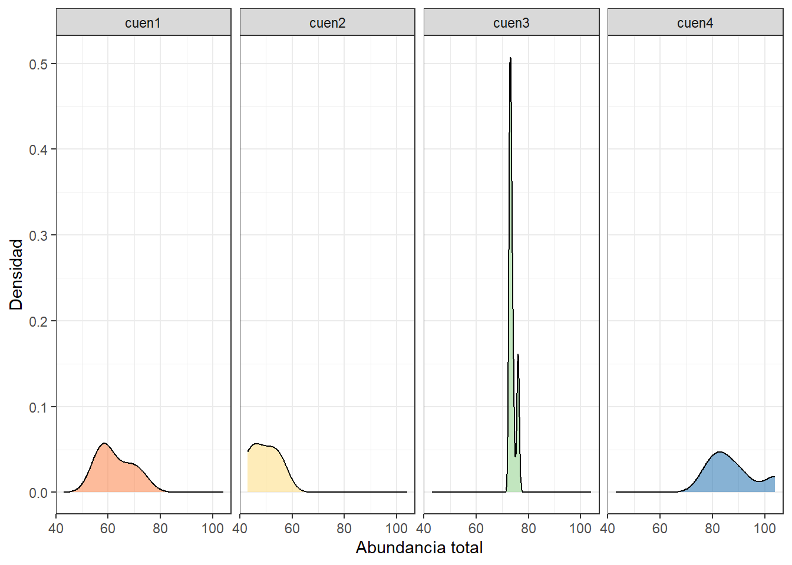
Cajas y bigotes con los datos encima
Código
# Cajas con las quebradas encima
ggplot(ins, aes(x = cuenca,
y = Ab,
fill = cuenca)) +
geom_boxplot(alpha = 0.7,
width = 0.55,
outlier.shape = NA) +
geom_jitter(width = 0.08, size = 2) +
scale_fill_manual(values = col_cuenca, guide = "none") +
labs(x = "Cuenca", y = "Abundancia total de insectos") +
theme_bw()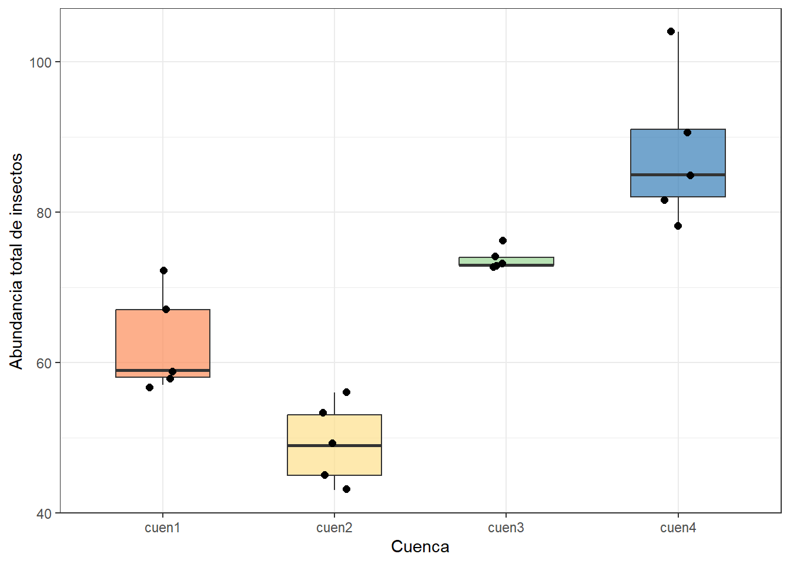
Facetas: varias variables a la vez
Código
# De formato ancho a largo y un panel por variable
ins %>%
select(cuenca, pH, Efem, Tric, Dipt) %>%
pivot_longer(-cuenca,
names_to = "Variable",
values_to = "Valor") %>%
mutate(Variable = factor(Variable,
levels = c("pH", "Efem", "Tric", "Dipt"))) %>%
ggplot(aes(x = cuenca,
y = Valor,
fill = cuenca)) +
geom_boxplot(alpha = 0.75) +
scale_fill_manual(values = col_cuenca,
guide = "none") +
facet_wrap(~ Variable,
scales = "free_y",
nrow = 1) +
labs(x = NULL, y = NULL) +
theme_bw()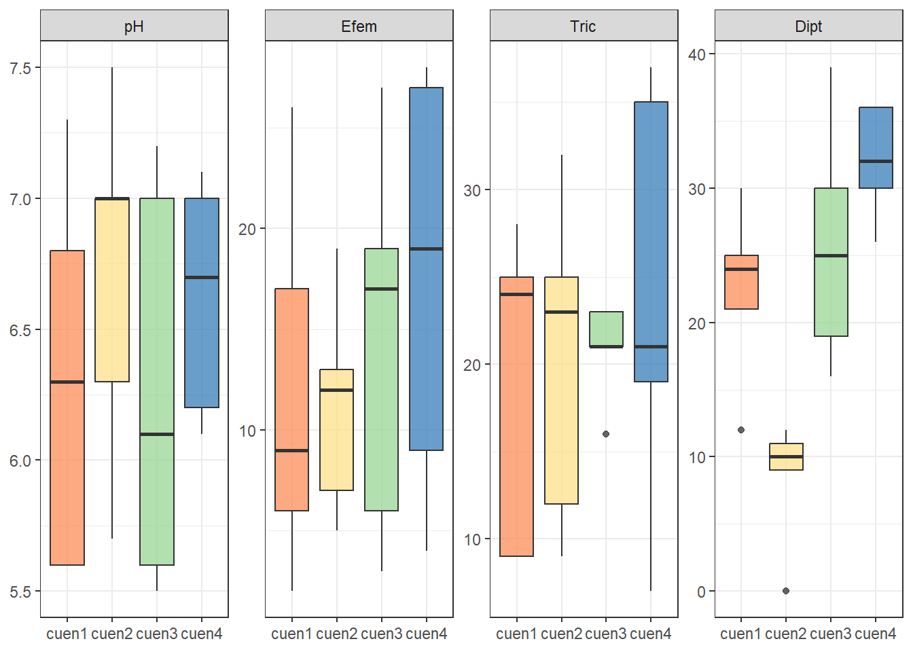
Código
# Medianas por cuenca de los tres órdenes
med_ord <- ins %>%
group_by(cuenca) %>%
summarise(across(c(Efem, Tric, Dipt), median))Diptera es el orden que más cambia entre cuencas (mediana de 10 en la cuenca 2 frente a 32 en la cuenca 4), mientras que Trichoptera tiene medianas parecidas (de 21 a 24) y difiere más en su dispersión.
Barras con estadísticos
Código
# Resumen por cuenca: media, desviación estándar, n y error estándar
res_cuenca <- ins %>%
group_by(cuenca) %>%
summarise(media = mean(Ab),
de = sd(Ab), n = n(),
ee = sd(Ab) / sqrt(n()))
# Tabla del resumen
res_cuenca %>%
kbl(booktabs = TRUE, digits = 2) %>%
kable_classic(full_width = F) %>%
row_spec(0, bold = TRUE)| cuenca | media | de | n | ee |
|---|---|---|---|---|
| cuen1 | 62.6 | 6.58 | 5 | 2.94 |
| cuen2 | 49.2 | 5.40 | 5 | 2.42 |
| cuen3 | 73.8 | 1.30 | 5 | 0.58 |
| cuen4 | 88.0 | 10.12 | 5 | 4.53 |
Código
# Barras con media ± e.e.
ggplot(res_cuenca, aes(x = cuenca,
y = media,
fill = cuenca)) +
geom_col(color = "black", width = 0.6) +
geom_errorbar(aes(ymin = media - ee,
ymax = media + ee), width = 0.2) +
scale_fill_manual(values = col_cuenca, guide = "none") +
labs(x = "Cuenca", y = "Abundancia media ± e.e.") +
theme_classic()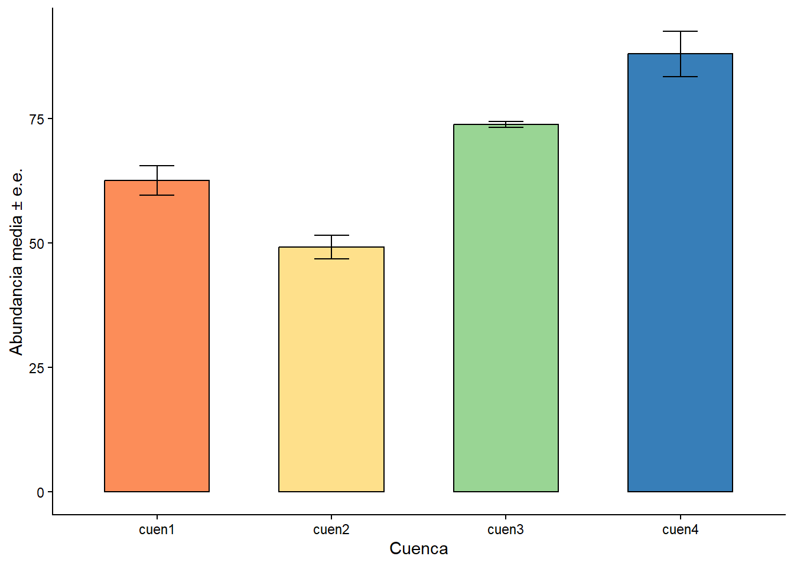
La cuenca 4 tiene la mayor abundancia media (88 individuos) y la cuenca 2 la menor (49.2). La cuenca 3 es la menos variable (d.e. = 1.3), lo que se ve también en su caja estrecha y su densidad aguda.
AdvertenciaDiseño (RA1)
Con 5 quebradas por cuenca, cada caja se construye con muy pocos puntos; por eso se dibujan encima. Además, siempre debe declararse si las barras muestran error estándar (e.e., precisión de la media) o desviación estándar (d.e., variabilidad de los datos).
Para discutir: la abundancia total difiere entre cuencas, pero ¿difiere también la composición? Mirando las facetas, ¿qué orden cambia más entre cuencas? ¿Qué técnica se usaría para comparar las cuatro cuencas con todos los órdenes a la vez (Taller 10)?
Parte 3 — Mesozooplancton estuarino: formato ancho y relaciones
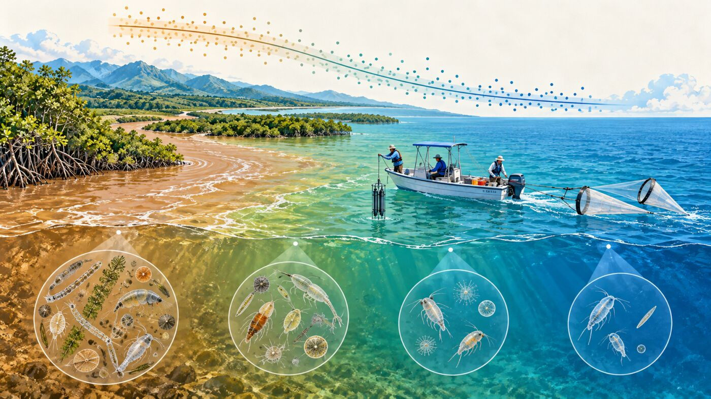
Pregunta: ¿Cambia la abundancia del mesozooplancton con la densidad y la salinidad del agua?
Carga de datos y paso a formato ancho
La hoja Riqueza está en formato largo: una fila por grupo taxonómico en cada combinación de estación, malla y capa. Para relacionar los taxones con las variables ambientales se necesita una fila por muestra (estación × malla × capa) y un taxón por columna (formato ancho). El procedimiento paso a paso está en el Taller 5. Bases de datos.
Código
# Leer la hoja «Riqueza» y depurar nombres y factores
biol <- read_xlsx("plancton.xlsx", sheet = "Riqueza") %>%
mutate(Groups = str_trim(Groups), # Quita espacios sobrantes
Station = factor(Station),
Size = factor(Size),
Layers = recode_factor(Layers, Depth = "Profunda",
Surface = "Superficial"))
# Grupos taxonómicos registrados
taxones <- unique(biol$Groups)
# Tabla con las primeras filas (formato largo)
head(biol) %>%
kbl(booktabs = TRUE, digits = 2) %>%
kable_classic(full_width = F) %>%
row_spec(0, bold = TRUE)| Station | Size | Layers | Groups | Abundance | Temperature | Salinity | Density |
|---|---|---|---|---|---|---|---|
| 2 | 250 μm | Superficial | Quetognatos | 0 | 30.30 | 34.70 | 21.42 |
| 2 | 250 μm | Superficial | Sergestidae | 0 | 29.41 | 25.83 | 15.09 |
| 2 | 250 μm | Superficial | Luciferidae | 0 | 29.59 | 12.39 | 5.73 |
| 2 | 250 μm | Superficial | Calanoida | 32 | 30.30 | 34.70 | 21.42 |
| 2 | 250 μm | Superficial | Cyclopoida | 4 | 29.41 | 25.83 | 15.09 |
| 2 | 250 μm | Superficial | Harpacticoida | 2 | 29.59 | 12.39 | 5.73 |
Código
# Variables ambientales: promedio por muestra
amb <- biol %>%
group_by(Station, Size, Layers) %>%
summarise(across(c(Temperature, Salinity, Density), mean),
.groups = "drop")
# Abundancias: suma por grupo y muestra, y paso a formato ancho
tax <- biol %>%
group_by(Station, Size, Layers, Groups) %>%
summarise(Abundance = sum(Abundance), .groups = "drop") %>%
pivot_wider(names_from = Groups,
values_from = Abundance,
values_fill = 0)
# Base ancha: ambiente + taxones + abundancia total
pl_ancho <- amb %>%
left_join(tax, by = c("Station", "Size", "Layers")) %>%
mutate(Ab = rowSums(across(all_of(taxones))))
# Tabla con las primeras muestras
pl_ancho %>%
select(Station, Size, Layers,
Temperature, Salinity, Density,
Calanoida, Luciferidae, Ab) %>%
head(4) %>%
kbl(booktabs = TRUE, digits = 2) %>%
kable_classic(full_width = F) %>%
row_spec(0, bold = TRUE)| Station | Size | Layers | Temperature | Salinity | Density | Calanoida | Luciferidae | Ab |
|---|---|---|---|---|---|---|---|---|
| 2 | 250 μm | Profunda | 29.88 | 25.26 | 14.40 | 12672 | 400 | 14030 |
| 2 | 250 μm | Superficial | 29.75 | 23.27 | 13.35 | 568 | 984 | 5210 |
| 2 | 500 μm | Profunda | 29.40 | 19.97 | 10.53 | 50 | 355 | 434 |
| 2 | 500 μm | Superficial | 29.99 | 28.66 | 17.02 | 10 | 10672 | 10697 |
La base ancha tiene 24 muestras: 6 estaciones × 2 mallas × 2 capas.
AdvertenciaDiseño (RA1)
La hoja original no tiene columna de época ni identificador de muestra: en cada combinación de estación, malla y capa hay entre 12 y 34 filas, es decir, varios juegos de los 12 grupos apilados, y las variables ambientales cambian entre esas filas. Por eso las abundancias se suman y las variables ambientales se promedian por muestra. Esa decisión debe declararse en el reporte.
Elipses: ambiente y taxones
Código
# Seis taxones más abundantes
top6 <- biol %>%
group_by(Groups) %>%
summarise(total = sum(Abundance)) %>%
slice_max(total, n = 6) %>%
pull(Groups)
# Correlación entre la matriz ambiental y la de taxones
r_XY <- cor(pl_ancho[, c("Temperature", "Salinity", "Density")],
log10(pl_ancho[, top6] + 1))
# Correlograma rectangular
corrplot(r_XY, method = "ellipse",
tl.col = "black", tl.srt = 45)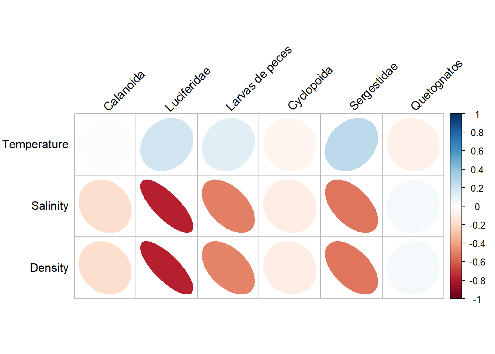
Luciferidae (r = -0.77 con la salinidad) y Sergestidae (r = -0.54) son más abundantes en las muestras menos salinas; la temperatura casi no se relaciona con ningún taxón. Las abundancias se transforman con log10(x + 1) para que unas pocas muestras muy abundantes no dominen el r.
Dispersión X–Y: lineal frente a loess
Código
# Dispersión con ajuste lineal y suavizado loess
ggplot(pl_ancho, aes(x = Density, y = log10(Ab))) +
geom_point(aes(color = Layers), size = 3) +
geom_smooth(method = "lm", formula = y ~ x, se = FALSE,
color = "black", linewidth = 0.8) +
geom_smooth(method = "loess", formula = y ~ x, se = FALSE,
color = "#C0392B", linetype = "dashed") +
scale_color_manual(values = col_capa) +
labs(x = "Densidad del agua (σt)",
y = expression(log[10]~"abundancia total"),
color = "Capa") +
theme_bw()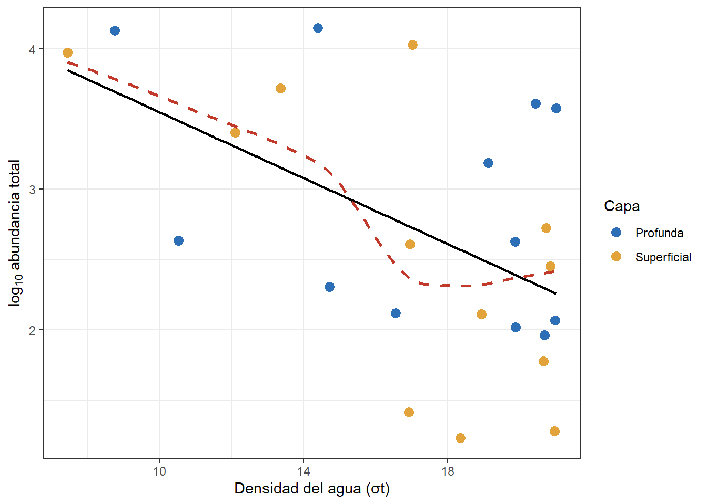
Código
# Correlación entre densidad del agua y log10 de la abundancia total
ct_den <- cor.test(pl_ancho$Density, log10(pl_ancho$Ab))
round(ct_den$estimate, 2) cor
-0.52 La abundancia total disminuye con la densidad del agua (r = -0.52; n = 24 muestras), y el loess sugiere que la caída no es estrictamente lineal.
NotaDensidad del agua, no de organismos
Density es la densidad del agua de mar (σt), que depende de la salinidad y la temperatura; no es la densidad de organismos. Por eso se relaciona tanto con la salinidad.
Para discutir: en la Parte 1, la base de insectos ya estaba en formato ancho. ¿Qué habría pasado si la correlación ambiente–taxones del plancton se hubiera calculado con la hoja larga, sin agregar por muestra?
Parte 4 — Mesozooplancton: diferencias con varios factores
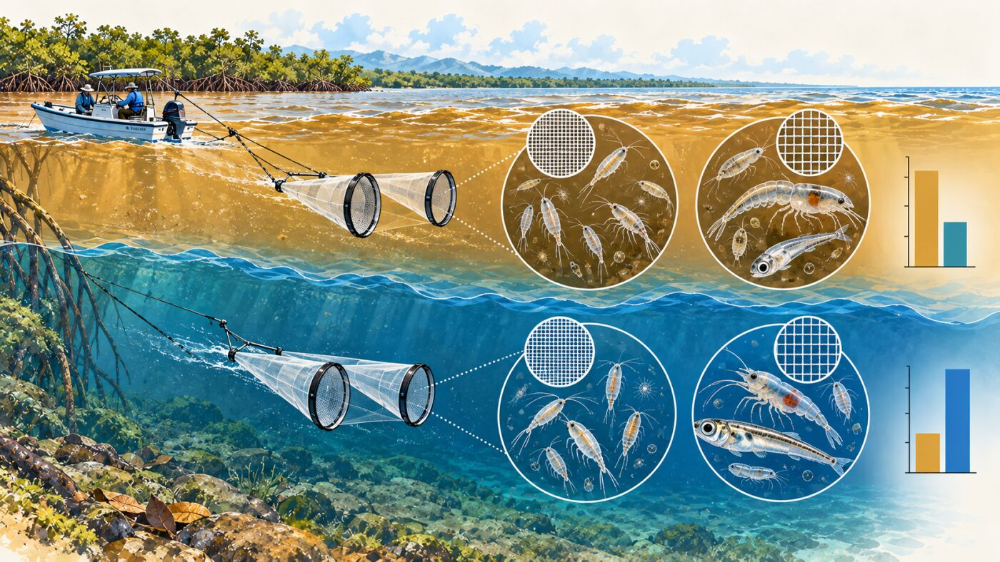
Pregunta: ¿Difiere la abundancia entre capas y estaciones? ¿El efecto de la malla depende de la capa?
Densidades por capa
Código
# Curvas de densidad por capa
ggplot(pl_ancho, aes(x = log10(Ab),
fill = Layers,
color = Layers)) +
geom_density(alpha = 0.35) +
scale_fill_manual(values = col_capa) +
scale_color_manual(values = col_capa) +
labs(x = expression(log[10]~"abundancia total"), y = "Densidad",
fill = "Capa", color = "Capa") +
theme_bw()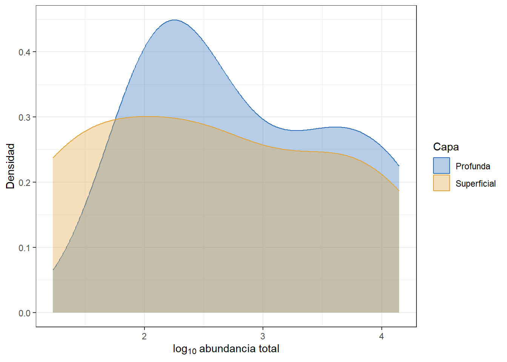
Las dos capas se solapan ampliamente (medianas de 2.63 y 2.53 en log10).
Cajas con dos factores: formato largo frente a ancho
La misma pregunta (abundancia por estación y capa) da figuras distintas según la base que se use:
Código
# Hoja larga: cada valor es la abundancia de un grupo en un registro
ggplot(biol, aes(x = Station, y = log10(Abundance + 1), fill = Layers)) +
geom_boxplot(alpha = 0.75) +
scale_fill_manual(values = col_capa) +
labs(x = "Estación",
y = expression(log[10]~"(abundancia + 1)"),
fill = "Capa") +
theme_bw()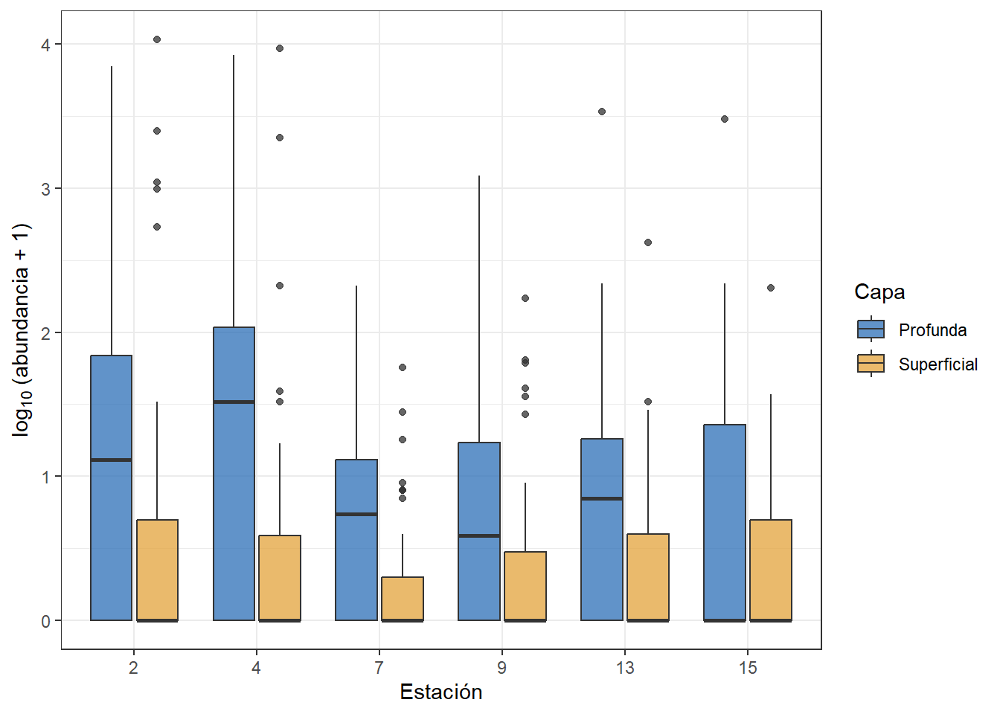
Código
# Base ancha: cada valor es la abundancia total de una muestra
ggplot(pl_ancho, aes(x = Station,
y = log10(Ab),
fill = Layers)) +
geom_boxplot(alpha = 0.75) +
scale_fill_manual(values = col_capa) +
labs(x = "Estación",
y = expression(log[10]~"abundancia total"),
fill = "Capa") +
theme_bw()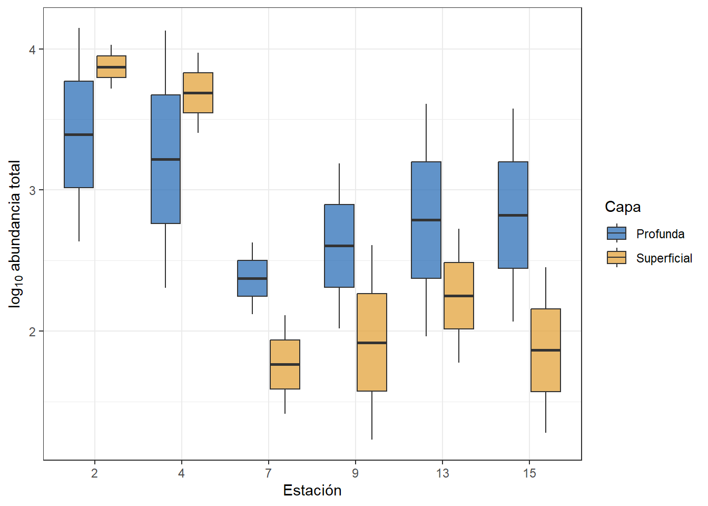
Código
# Medianas por estación y capa en las dos bases
med_largo <- biol %>%
group_by(Station, Layers) %>%
summarise(m = median(log10(Abundance + 1)),
.groups = "drop") %>%
pivot_wider(names_from = Layers,
values_from = m)
med_ancho <- pl_ancho %>%
group_by(Station, Layers) %>%
summarise(m = median(log10(Ab)),
.groups = "drop") %>%
pivot_wider(names_from = Layers,
values_from = m)
# Estaciones donde la capa superficial supera a la profunda en cada base
c(largo = sum(med_largo$Superficial > med_largo$Profunda),
ancho = sum(med_ancho$Superficial > med_ancho$Profunda))largo ancho
0 2 Las dos figuras no cuentan la misma historia. En la hoja larga, 247 de los 498 registros son cero y la mediana de la capa superficial es cero en todas las estaciones, así que la capa profunda parece mayor (lo es en 5 de las 6 estaciones, y en la restante las dos medianas son cero). En la base ancha, la capa superficial supera a la profunda en las estaciones 2 y 4. La hoja larga describe registros de taxones (muchos grupos raros, con ceros); la base ancha describe la abundancia total de cada muestra, que es la unidad muestral. Para comparar capas, la figura correcta es la segunda.
Barras con estadísticos: malla × capa
Código
# Media y error estándar de la abundancia total por capa y malla (en miles)
res_mc <- pl_ancho %>%
group_by(Layers, Size) %>%
summarise(n = n(), media = mean(Ab) / 1000,
ee = sd(Ab) / sqrt(n()) / 1000, .groups = "drop")
# Tabla del resumen
res_mc %>%
kbl(booktabs = TRUE, digits = 2,
col.names = c("Capa", "Malla", "n",
"Media (miles)","e.e. (miles)")) %>%
kable_classic(full_width = F) %>%
row_spec(0, bold = TRUE)| Capa | Malla | n | Media (miles) | e.e. (miles) |
|---|---|---|---|---|
| Profunda | 250 μm | 6 | 6.18 | 2.47 |
| Profunda | 500 μm | 6 | 0.23 | 0.07 |
| Superficial | 250 μm | 6 | 1.51 | 0.82 |
| Superficial | 500 μm | 6 | 3.36 | 2.12 |
Código
# Barras con media ± e.e.
ggplot(res_mc, aes(x = Layers, y = media, fill = Size)) +
geom_col(position = position_dodge(0.8), width = 0.7) +
geom_errorbar(aes(ymin = media - ee, ymax = media + ee),
position = position_dodge(0.8), width = 0.2) +
scale_fill_manual(values = col_malla) +
labs(x = "Capa",
y = "Abundancia media (miles) ± e.e.",
fill = "Malla") +
theme_bw()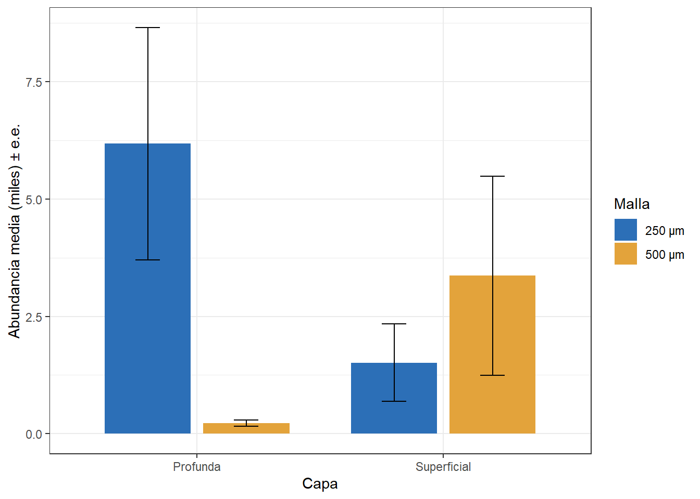
En la capa profunda domina la malla de 250 μm (6.18 frente a 0.23 miles); en la superficial, la de 500 μm (3.36 frente a 1.51 miles). El patrón se invierte entre capas: es un indicio de interacción malla × capa, que una MANOVA o una PERMANOVA factorial permitiría probar (Taller 10).
Coplot con variables categorizadas
La salinidad se categoriza en terciles a nivel de muestra (base ancha) y se usa como variable condicionante:
Código
# Terciles de salinidad en la base ancha
pl_ancho <- pl_ancho %>%
mutate(Sal_niv = cut(Salinity,
quantile(Salinity, c(0, 1/3, 2/3, 1)),
labels = c("Baja", "Media", "Alta"),
include.lowest = TRUE))
# Un panel por nivel de salinidad
ggplot(pl_ancho, aes(x = Temperature, y = log10(Ab))) +
geom_point(aes(color = Layers), size = 2.5) +
geom_smooth(method = "lm", formula = y ~ x,
se = FALSE, color = "black") +
scale_color_manual(values = col_capa) +
facet_wrap(~ Sal_niv, labeller = label_both) +
labs(x = "Temperatura (°C)",
y = expression(log[10]~"abundancia total"),
color = "Capa") +
theme_bw()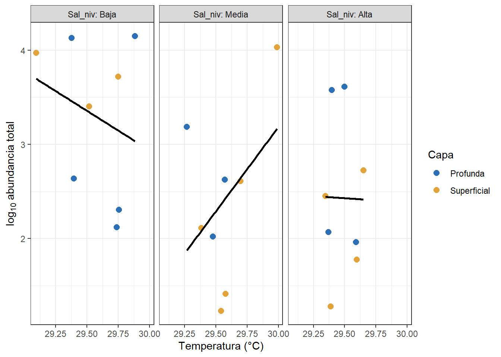
Con 8 muestras por panel, un cambio de pendiente entre niveles de salinidad es solo una hipótesis para probar después.
TipCómo reportar el resultado
En la sección de métodos de un artículo o de la tesis, la exploración se reporta en pocas líneas: qué figuras se usaron, qué patrones orientaron las decisiones y qué transformaciones se aplicaron. Por ejemplo:
La exploración gráfica mostró que la abundancia total de mesozooplancton disminuyó con la densidad del agua (r = -0,52; n = 24) y que el efecto del tamaño de malla se invirtió entre la capa profunda y la superficial, lo que sugirió incluir la interacción malla × capa en los análisis posteriores. Las abundancias se transformaron con log10(x + 1) para reducir la influencia de las muestras más abundantes.
Esta estructura es la que se espera en las figuras exploratorias del CQ2 y del estudio de caso.
Para discutir: ¿qué podría explicar, desde el muestreo, que la malla fina capture más en la capa profunda y la gruesa en la superficial? ¿Es un efecto biológico o de eficiencia de captura?
Parte 5 — Burbujas: el ensamblaje a lo largo del gradiente salino
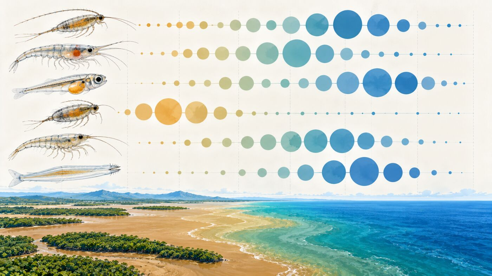
Pregunta: ¿Qué taxones dominan el mesozooplancton y en qué parte del gradiente de salinidad se concentran?
La figura de burbujas integra tres dimensiones: el gradiente (eje X), el taxón (eje Y) y la abundancia (tamaño). Los taxones se ordenan por abundancia total, con los más abundantes arriba.
Código
# Abundancia total y porcentaje de cada taxón
orden_tax <- biol %>%
group_by(Groups) %>%
summarise(Total = sum(Abundance)) %>%
arrange(desc(Total)) %>%
mutate(Porcentaje = round(100 * Total / sum(Total), 1))
# Tabla de dominancia
orden_tax %>%
head(8) %>%
kbl(booktabs = TRUE) %>%
kable_classic(full_width = F) %>%
row_spec(0, bold = TRUE)| Groups | Total | Porcentaje |
|---|---|---|
| Calanoida | 33482 | 49.5 |
| Luciferidae | 24110 | 35.6 |
| Larvas de peces | 2724 | 4.0 |
| Cyclopoida | 2073 | 3.1 |
| Sergestidae | 1691 | 2.5 |
| Quetognatos | 909 | 1.3 |
| Otros | 834 | 1.2 |
| Larva Zoea | 536 | 0.8 |
Código
# Ocho taxones más abundantes, en orden (el más abundante arriba)
top8 <- orden_tax$Groups[1:8]
# Registros con presencia de esos taxones
burb <- biol %>%
filter(Groups %in% top8, Abundance > 0) %>%
mutate(Groups = factor(Groups, levels = rev(top8)))
# Figura de burbujas frente a la salinidad
ggplot(burb, aes(x = Salinity,
y = Groups,
size = Abundance,
color = Station)) +
geom_point(alpha = 0.6) +
geom_vline(xintercept = seq(10, 35, by = 5),
color = "grey85") +
scale_size(range = c(1, 10), name = "Abundancia") +
scale_color_viridis_d(name = "Estación", end = 0.9) +
scale_x_continuous(limits = c(10, 36),
breaks = seq(10, 35, by = 5)) +
labs(x = "Salinidad", y = NULL) +
theme_bw() +
theme(panel.grid = element_blank())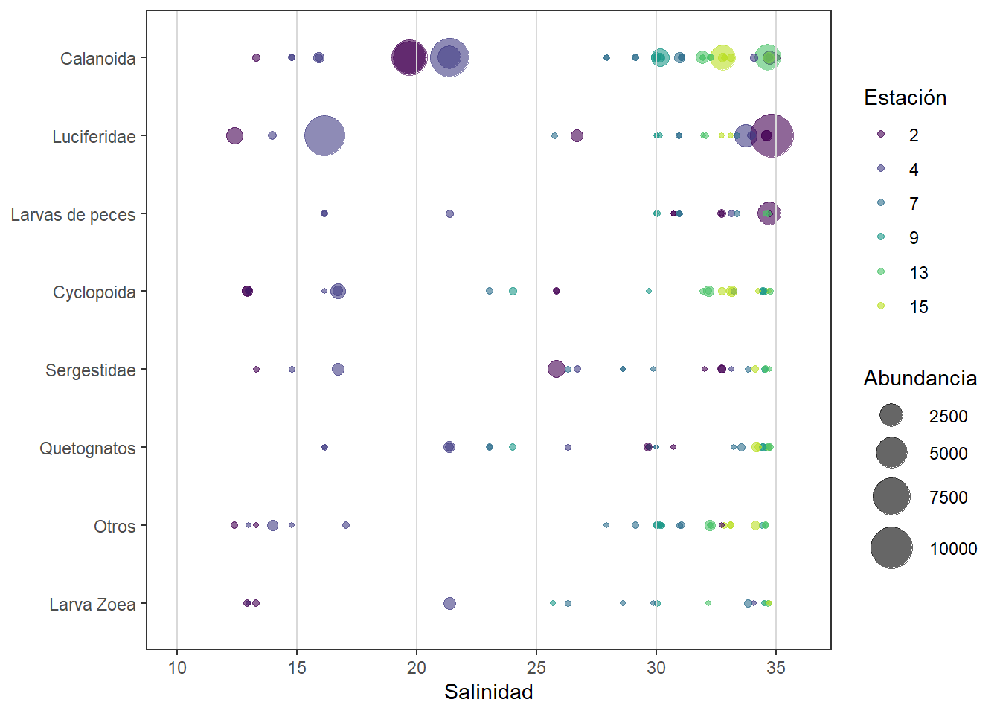
Calanoida (49.5 % del total) y Luciferidae (35.6 %) concentran la mayor parte de la abundancia y aparecen en casi todo el gradiente salino. Las burbujas más grandes aparecen tanto en salinidades bajas e intermedias (entre 15 y 22) como cerca de 35: no hay una respuesta simple y monótona al gradiente.
Código
# Misma figura con la temperatura en el eje X
ggplot(burb, aes(x = Temperature,
y = Groups,
size = Abundance,
color = Station)) +
geom_point(alpha = 0.6) +
scale_size(range = c(1, 10), name = "Abundancia") +
scale_color_viridis_d(name = "Estación", end = 0.9) +
labs(x = "Temperatura (°C)", y = NULL) +
theme_bw() +
theme(panel.grid = element_blank())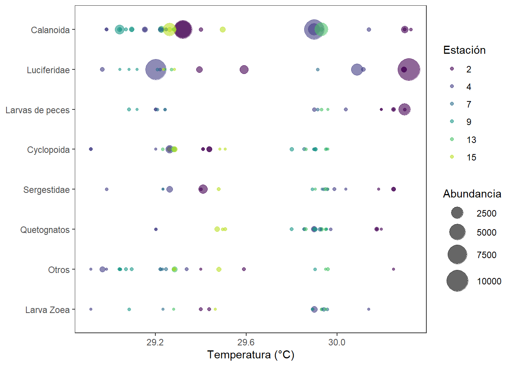
La temperatura varía poco (de 28.9 a 30.3 °C), así que las burbujas se apilan en un rango estrecho. En este estuario, la salinidad estructura más la comunidad que la temperatura.
TipLeyendas dentro del panel
Las variantes con la leyenda dentro del panel, los círculos vacíos en la leyenda de tamaño y las burbujas interactivas con plotly están en el material complementario. Son también la base de la Sección A del CQ2.
AdvertenciaDiseño (RA1)
Cada burbuja es un registro de la hoja larga, no una muestra: como hay varias filas por muestra, una misma estación puede aportar varias burbujas al mismo taxón. La figura sirve para describir el patrón, no para contar unidades muestrales.
Para discutir: si un taxón tiene su máximo en salinidades intermedias y desaparece en los extremos (respuesta unimodal), ¿qué técnica sería más adecuada para relacionarlo con el gradiente: RDA (respuesta lineal) o CCA (respuesta unimodal)? Se retoma en los Talleres 8 y 9.
Lista de verificación antes de interpretar la exploración
Antes de pasar a una técnica multivariada, conviene verificar:
- ¿Cada fila es una unidad muestral? Si no, ¿se agregó y se declaró cómo?
- ¿Se identificaron las matrices F, X y Y y se seleccionaron las columnas por nombre?
- ¿La pregunta es de relaciones o de diferencias, y la figura elegida responde a esa pregunta?
- ¿Se observó la forma de las relaciones (lineal, unimodal, con umbral) antes de elegir entre RDA y CCA?
- ¿Se mostraron los datos individuales cuando el n por grupo es pequeño?
- ¿Se declaró si las barras de error son e.e. o d.e.?
- Si se categorizó una variable continua, ¿se justificó el criterio de corte y se revisó el n por clase?
- ¿Se revisó la proporción de ceros y la necesidad de transformar las abundancias?
Estudio de caso — Grupos funcionales alimentarios del río Gaira
La hoja Insectos2 resume la abundancia (Ab) y la biomasa (Biom) de cinco grupos funcionales alimentarios (GF) de macroinvertebrados del río Gaira en 8 muestreos (M1 a M8), repartidos en dos períodos de lluvia (P1 y P2) (Rodríguez-Barrios et al., 2011). Los GF son colectores-filtradores (C-F), colectores-recolectores (C-R), depredadores (D), raspadores (R) y trituradores (T).
Antes de correr el código, se responde por escrito:
- ¿Qué representa una fila de esta base? ¿Cuál es la unidad muestral: el GF o el muestreo?
- ¿El grupo funcional más abundante será también el de mayor biomasa? ¿Por qué podrían diferir?
- ¿Cuántos muestreos hay en cada período? ¿Qué implica para comparar P1 y P2?
Código
# Cargar la hoja «Insectos2» y definir los factores
gf <- read_excel("Insectos.xlsx", sheet = "Insectos2") %>%
mutate(across(c(Muestreo, GF, Lluvia), factor))
# Muestreos por período
gf %>% distinct(Muestreo, Lluvia) %>% count(Lluvia)# A tibble: 2 × 2
Lluvia n
<fct> <int>
1 P1 3
2 P2 5Paso 1 — Resumen por grupo funcional y período
Código
# Media, e.e. y n de abundancia y biomasa por período y grupo funcional
res_gf <- gf %>%
group_by(Lluvia, GF) %>%
summarise(n = n(),
Ab_media = mean(Ab), Ab_ee = sd(Ab) / sqrt(n()),
Biom_media = mean(Biom), Biom_ee = sd(Biom) / sqrt(n()),
.groups = "drop")
# Tabla del resumen
res_gf %>%
kbl(booktabs = TRUE, digits = 1) %>%
kable_classic(full_width = F) %>%
row_spec(0, bold = TRUE)| Lluvia | GF | n | Ab_media | Ab_ee | Biom_media | Biom_ee |
|---|---|---|---|---|---|---|
| P1 | C-F | 3 | 104.3 | 52.3 | 37.0 | 17.3 |
| P1 | C-R | 3 | 204.7 | 93.4 | 31.7 | 18.5 |
| P1 | D | 3 | 138.3 | 36.8 | 361.4 | 69.3 |
| P1 | R | 3 | 115.0 | 52.2 | 53.5 | 40.3 |
| P1 | T | 3 | 60.7 | 51.2 | 190.1 | 170.8 |
| P2 | C-F | 5 | 39.8 | 11.0 | 14.4 | 4.6 |
| P2 | C-R | 5 | 169.6 | 63.0 | 88.5 | 51.5 |
| P2 | D | 5 | 69.0 | 7.0 | 176.2 | 42.4 |
| P2 | R | 5 | 32.6 | 9.0 | 21.9 | 5.7 |
| P2 | T | 5 | 35.8 | 16.9 | 151.1 | 99.7 |
Paso 2 — Abundancia frente a biomasa
Código
# Medias y e.e. de abundancia y biomasa en formato largo
res_gf %>%
pivot_longer(c(Ab_media, Biom_media),
names_to = "Medida",
values_to = "media") %>%
mutate(ee = if_else(Medida == "Ab_media",
Ab_ee, Biom_ee),
Medida = recode(Medida,
Ab_media = "Abundancia",
Biom_media = "Biomasa")) %>%
ggplot(aes(x = GF, y = media, fill = Lluvia)) +
geom_col(position = position_dodge(0.8),
width = 0.7, color = "black") +
geom_errorbar(aes(ymin = pmax(media - ee, 0),
ymax = media + ee),
position = position_dodge(0.8), width = 0.2) +
scale_fill_manual(values = c(P1 = "#E69F00", P2 = "#999999")) +
facet_wrap(~ Medida, scales = "free_y") +
labs(x = "Grupo funcional",
y = "Media ± e.e.",
fill = "Período") +
theme_classic()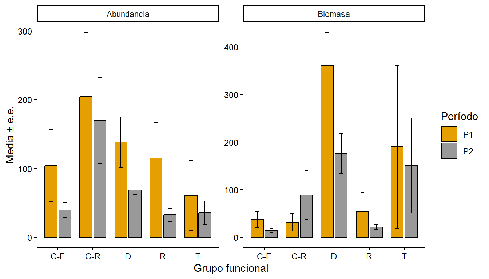
Paso 3 — ¿Muchos individuos o individuos grandes?
Código
# Dispersión en escala logarítmica, coloreada por grupo funcional
ggplot(gf, aes(x = Ab, y = Biom, color = GF)) +
geom_point(size = 2.5) +
scale_x_log10() + scale_y_log10() +
labs(x = "Abundancia (escala log10)",
y = "Biomasa (escala log10)",
color = "Grupo funcional") +
theme_bw()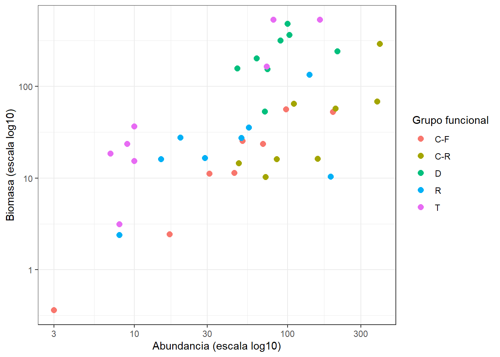
NotaVerificación (desplegar después de responder)
- Cada fila es un grupo funcional en un muestreo. La unidad muestral es el muestreo: los cinco GF de un mismo muestreo se obtuvieron de la misma muestra, así que no son réplicas independientes entre sí. Para comparar períodos, la réplica es el muestreo (3 en P1 y 5 en P2).
- No coinciden. Los colectores-recolectores tienen la mayor abundancia media en ambos períodos (205 en P1 y 170 en P2), mientras que los depredadores tienen la mayor biomasa media (361 en P1 y 176 en P2). Pocos individuos grandes pueden pesar más que muchos individuos pequeños: en la dispersión, los depredadores (y algunos registros de trituradores) quedan por encima de los demás grupos para una misma abundancia.
- P1 tiene 3 muestreos y P2 tiene 5. Con n tan pequeño y desigual, los errores estándar de P1 son grandes y la comparación entre períodos es solo descriptiva.
NotaDe la exploración al análisis multivariado
Si cada muestreo se describe con la abundancia (o biomasa) de los cinco GF, se obtiene una matriz Y de 8 filas × 5 columnas. La pregunta «¿difiere la estructura trófica entre períodos?» se respondería con una PERMANOVA (Taller 10), con el muestreo como unidad muestral.
Cierre — Una base para el futuro proyecto de grado
Actividad en clase (10 minutos, sin código)
En parejas, se responde sobre el proyecto de grado de cada integrante o sobre la base del estudio de caso:
- ¿Qué es una fila (unidad muestral)? ¿Cuáles son las matrices Y, X y F?
- ¿La pregunta principal es de relaciones o de diferencias? ¿Qué figura del mapa se haría primero?
- ¿Hay algún factor? Si no lo hay, ¿qué variable continua se podría categorizar y con qué criterio?
- ¿Qué decisión de datos (agregar, transformar, estandarizar) habría que justificar antes de la técnica multivariada?
Antes de la próxima sesión (tarea corta)
Con los datos del estudio de caso (o con datos simulados plausibles del propio tema):
- Se construye un correlograma de las variables cuantitativas (Parte 1).
- Se hace una figura de relaciones (dispersión o burbujas) y una de diferencias (cajas, facetas o barras) (Partes 2 a 5).
- Se escribe un párrafo como el del recuadro «Cómo reportar el resultado» y se revisa la lista de verificación.
Este material sirve de insumo para A3 (resultados preliminares del estudio de caso) y prepara la ordenación lineal de la siguiente sesión (Taller 7. PCA).
Material de apoyo

Para repasar y profundizar después de la sesión:
- Cuestionario 1 · Exploración gráfica multivariada — 12 preguntas de opción múltiple con pista y explicación, basadas en las Partes 1 a 5 y en el estudio de caso. Práctica sin nota.
- Cuestionario 2 · Visualización multivariada — cuestionario Quarto evaluable (Evidencia 3, 40 puntos, rúbrica R2): 10 preguntas sobre figuras de burbujas y el mapa de exploración. La plantilla se descarga en Cuestionario_Visualizacion.zip; se entrega el
.qmdejecutado y su render en Moodle. Cierra el domingo 1 de noviembre. - Complemento · Exploración de microalgas del río Gaira — las tres matrices (F, X y Y) de un caso real: correlación frente a diferencia entre grupos, elipses por tributario, escalas de las variables y colonización por visitas, como puente hacia el PCA del Taller 7.
- Material complementario · Exploración gráfica — burbujas con datos hipotéticos y leyendas, histogramas y densidades con
lattice, violines, cajas con tres factores, burbujas interactivas conplotlyy guardado automático de figuras y tablas.
Referencias
Borcard, D., Gillet, F., & Legendre, P. (2018). Numerical Ecology with R (2nd ed.). Springer.
Rodríguez-Barrios, J., Ospina-Tórres, R., & Turizo-Correa, R. (2011). Grupos funcionales alimentarios de macroinvertebrados acuáticos en el río Gaira, Colombia. Revista de Biología Tropical, 59(4), 1537–1552. https://doi.org/10.15517/rbt.v59i4.3418 — Base de datos
Insectos2.Vargas-Ospina, B., Córdoba-Bejarano, J. A., Riquelme-Bugueño, R., Flórez-Leiva, L., & Rodríguez-Barrios, J. (2025). Short-term variations of mesozooplankton in a tropical estuary, Caribbean Colombia. Wetlands, 45(6), 83. https://doi.org/10.1007/s13157-025-01951-7 — Base de datos
plancton.xlsx.Wei, T., & Simko, V. (2024). R package ‘corrplot’: Visualization of a Correlation Matrix. https://github.com/taiyun/corrplot
Wickham, H., Çetinkaya-Rundel, M., & Grolemund, G. (2023). R for Data Science (2nd ed.). O’Reilly Media. https://r4ds.hadley.nz
Nota
La base Insectos es hipotética, con fines didácticos. Las figuras y el código de este taller son de elaboración propia a partir de las bases citadas; no reproducen ejercicios ni código de las fuentes bibliográficas.